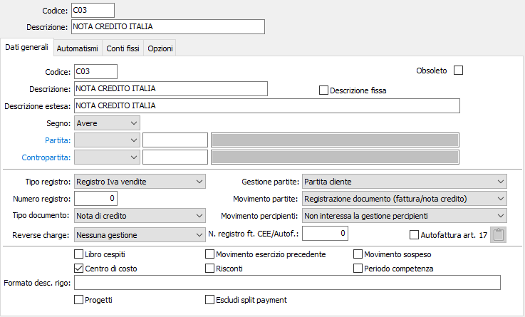
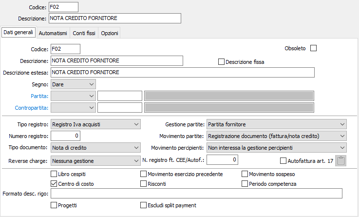
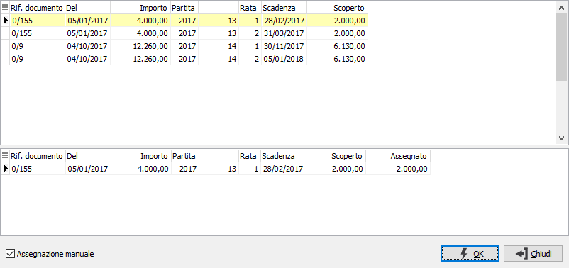

Registrazione di note di credito generiche
Per registrare una nota di credito a cliente o da fornitore, occorre utilizzare causali analoghe alle due illustrate di seguito. Nelle immagini sono illustrate causali relative ai registri Iva della serie sezionale 0 (zero), che attivano le partite aperte. Gli utenti che non intendono utilizzare le partite aperte, indicheranno nell'apposito campo il valore non interessa la gestione partite.


La registrazione di una nota di credito, sia essa a cliente che di fornitore, è assolutamente identica alla registrazione di una fattura di vendita o di acquisto. Viene presentata la sezione Iva e la sezione Prima nota (ovviamente con segni invertiti rispetto alla registrazioni di fattura), e viene creata la sezione Registrazione partita.
Tuttavia all'atto della conferma del movimento, es la configurazione indica di accedere alla partita, il programma effettua un controllo sulla tabella scadenze per il cliente o il fornitore attivo, e se individua l'esistenza di partite aperte viene richiesto se si vuole associare il documento corrente ad una fattura nel caso in cui si voglia dedurre la nota di credito dalle scadenze di una fattura da pagare o da incassare.

L'utente, in funzione della necessità, può rifiutare l'assegnazione lasciando la nota di credito come partita a se stante. Se invece accetta l'assegnazione, viene visualizzata la finestra video di selezione documento in cui vengono presentate tutte le scadenze ancora da esitare per il cliente o il fornitore attivo.
L'utente può assegnare la nota di credito ad una scadenza di una fattura, segnando tramite il mouse la scadenza desiderata e confermando successivamente tramite pressione del bottone OK.